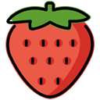

Det absolut tråkigaste jag gjort i sommar var att sitta runt och göra ingenting men jag har också gjort en rolig grej och det var att göra spel i godot. Jag har badat 0 gånger och det kändes som ingenting. Det godaste jag åt i somras var gårds gris och jag skulle vilja jämföra smaken med guld.
En tv-serie som jag upptäckte i somras var Severance och den skulle jag vilja rekommendera till alla som gillar bra serier.
En person som jag träffade i somras var ingen ny och jag skulle vilja citera hen genom att säga " ". Vid ett tillfälle i somras åkte jag till mitt hus där var det både fullt med katthår och lugnt. Jag skulle vilja sammanfatta min sommar med tre ord, kunde varit bättre.
En helt okej sommar men nog har jag allt längtat eftar att jag ska få börja skolan igen och jag tror att detta år på NTI kommer att bli ok.